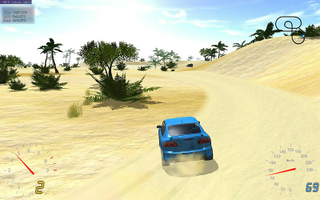
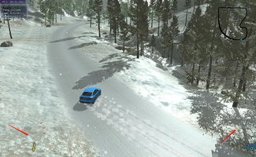
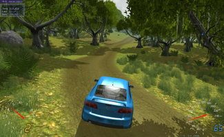

Stunt Rally
Dieser Artikel wurde für die folgenden Ubuntu-Versionen getestet:
Ubuntu 14.04 Trusty Tahr
Zum Verständnis dieses Artikels sind folgende Seiten hilfreich:
Stunt Rally  ist ein freies 3D-Rennspiel, das auf der Fahrphysik von VDrift aufbaut, für die Grafikdarstellung aber die OGRE-Grafikengine verwendet. Im Unterschied zu VDrift geht es in Stunt Rally, wie der Name suggeriert, um Rallye-Strecken mit möglichen Stunt-Elementen (Loopings, Rampen...).
ist ein freies 3D-Rennspiel, das auf der Fahrphysik von VDrift aufbaut, für die Grafikdarstellung aber die OGRE-Grafikengine verwendet. Im Unterschied zu VDrift geht es in Stunt Rally, wie der Name suggeriert, um Rallye-Strecken mit möglichen Stunt-Elementen (Loopings, Rampen...).
Außerdem liefert StuntRally einen Editor mit, der es ermöglicht, eigene Strecken zu erstellen.
|  |
| Insel |
|  |
| Winter |
|  |
| Dschungel |
Voraussetzungen¶
Das folgende Paket wird zwingend benötigt, um die Fehlermeldung Could not initialize SDL! aufzulösen.
xorg-dev
 mit apturl
mit apturl
Paketliste zum Kopieren:
sudo apt-get install xorg-dev
sudo aptitude install xorg-dev
Installation¶
Für Linux wird ein Archiv mit einer vorkompilierten Binärdatei angeboten  . Nach dem Entpacken[1] des Archivs kann das Spiel mit stuntrally bzw. der Streckeneditor mit sr-editor gestartet[2] werden.
. Nach dem Entpacken[1] des Archivs kann das Spiel mit stuntrally bzw. der Streckeneditor mit sr-editor gestartet[2] werden.
Möchte man eine Audio-Ausgabe haben, verwendet man folgenden Befehl:
padsp /ORDNER/stuntrally
Der ORDNER, welcher stuntrally beinhaltet, ist entsprechend anzupassen.
Fremdquelle¶
Playdeb bietet eine Fremdquelle an.
Hinweis!
Zusätzliche Fremdquellen können das System gefährden.
Steuerung¶
Das Spiel kann entweder per Tastatur oder per Joystick/Lenkrad gesteuert werden. Letzteres muss erst im Menü konfiguriert werden.
Nachfolgend eine Auflistung der wichtigsten Standardtasten zur Steuerung:
| Steuerung | |
| Auto | |
| ↑ | Beschleunigen |
| ↓ | Bremsen |
| ← , → | Lenken |
| Handbremse | |
| Strg | Boost |
| Verschiedenes | |
| Tab ⇆ | Menu ein-/ausblenden |
| F5 | Level neu starten |
| Druck | Bildschirmfoto |
Bildschirmfotos werden im (versteckten) Ordner .local/share/stuntrally/screenshots/ im Homeverzeichnis gespeichert.
Infobox¶

| Stunt Rally | |
| Genre: | Simulation |
| Sprache: |  |
| Veröffentlichung: | 2010 |
| Multiplayer: | Ja |
| Steuerung: | Tastatur, Joystick |
| Systemvoraussetzungen: | Empfohlen: Dual-Core-Prozessor, Grafikkarte: GeForce 9600 GT / Radeon HD 3870 oder besser |
| Medien: | Download |
| Läuft mit: | nativ |
- Erstellt mit Inyoka
-
 2004 – 2017 ubuntuusers.de • Einige Rechte vorbehalten
2004 – 2017 ubuntuusers.de • Einige Rechte vorbehalten
Lizenz • Kontakt • Datenschutz • Impressum • Serverstatus -
Serverhousing gespendet von